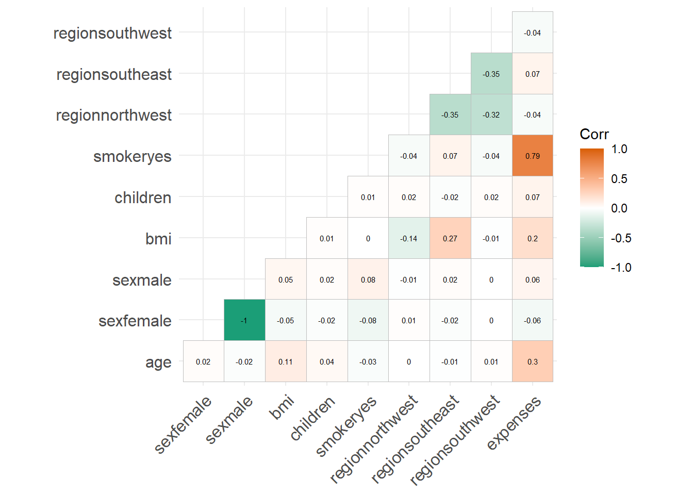
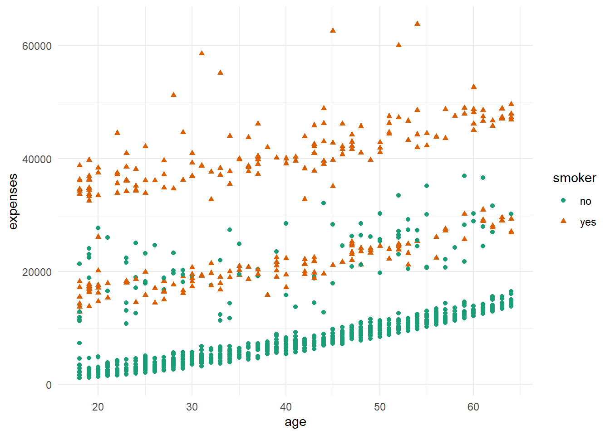
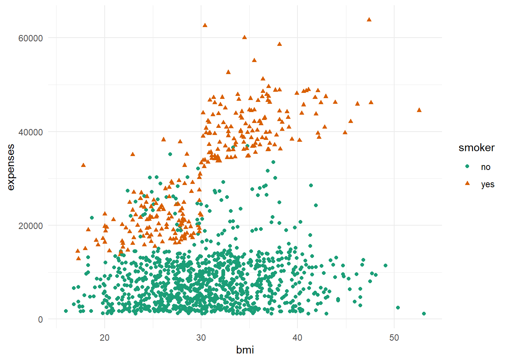
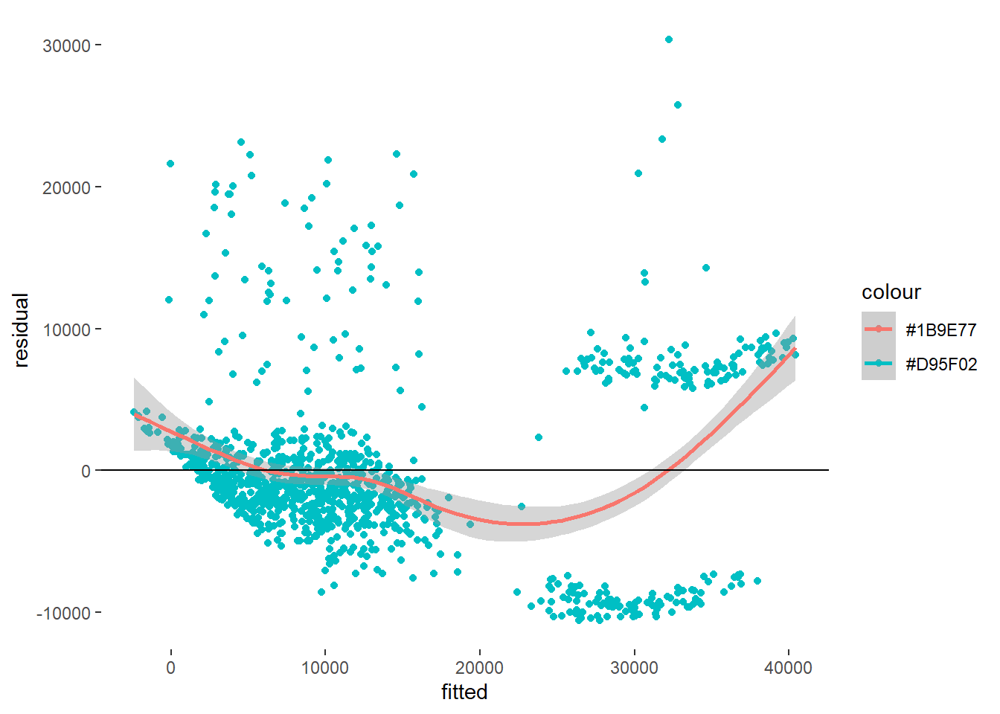
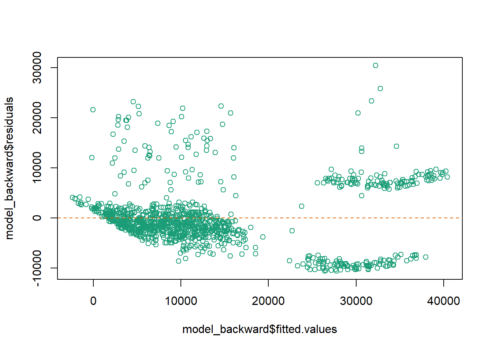

Code
# Library Input
library(dplyr)
library(GGally)
library(ggcorrplot)
library(MLmetrics)
library(performance)
library(ggplot2)
library(lmtest)
library(car)
library(RColorBrewer)
library(DT)
knitr::opts_chunk$set(echo = TRUE)Rahul Gundeti
December 12, 2022
To predict things have been never so easy. I used to wonder how Insurance amount is charged normally. So, in the mean time I came across this dataset and thought of working on it! Using this I wanted to know how few features determine our insurance amount! As an International student I am completely aware of the benefits of having the health insurance but what got me thinking is how is this a successful industry and how can it give a dymanic quote to each individual by considering very few parameters and assess the risk they own and build a successful business on it. It’s almost a gamble and it’s my attempt to understand and analyse the basic fundamentals on how the industry operates.
Warning: package 'readr' was built under R version 4.1.3Rows: 1338 Columns: 7
-- Column specification --------------------------------------------------------
Delimiter: ","
chr (3): sex, smoker, region
dbl (4): age, bmi, children, expenses
i Use `spec()` to retrieve the full column specification for this data.
i Specify the column types or set `show_col_types = FALSE` to quiet this message.The data used in this report contains a list of insurance contract of 1.338 individuals. The insurance data used consists of several variables with the following details:
age: age of primary beneficiary sex: insurance contractor gender, female, male bmi: Body mass index, providing an understanding of body, weights that are relatively high or low relative to height, objective index of body weight (kg / m ^ 2) using the ratio of height to weight, ideally 18.5 to 24.9 children: Number of children covered by health insurance / Number of dependents smoker: Smoking or not region: the beneficiary’s residential area in the US, northeast, southeast, southwest, northwest expenses: Individual medical costs billed by health insurance
spc_tbl_ [1,338 x 7] (S3: spec_tbl_df/tbl_df/tbl/data.frame)
$ age : num [1:1338] 19 18 28 33 32 31 46 37 37 60 ...
$ sex : Factor w/ 2 levels "female","male": 1 2 2 2 2 1 1 1 2 1 ...
$ bmi : num [1:1338] 27.9 33.8 33 22.7 28.9 25.7 33.4 27.7 29.8 25.8 ...
$ children: num [1:1338] 0 1 3 0 0 0 1 3 2 0 ...
$ smoker : Factor w/ 2 levels "no","yes": 2 1 1 1 1 1 1 1 1 1 ...
$ region : Factor w/ 4 levels "northeast","northwest",..: 4 3 3 2 2 3 3 2 1 2 ...
$ expenses: num [1:1338] 16885 1726 4449 21984 3867 ...
- attr(*, "spec")=
.. cols(
.. age = col_double(),
.. sex = col_character(),
.. bmi = col_double(),
.. children = col_double(),
.. smoker = col_character(),
.. region = col_character(),
.. expenses = col_double()
.. )
- attr(*, "problems")=<externalptr> Exploratory Data Analysis refers to the critical process of performing initial investigations on data so as to discover patterns,to spot anomalies,to test hypothesis and to check assumptions with the help of summary statistics and graphical representations.
All data types have been converted to the desired data types and there’s no more missing value.

As can be seen from the correlation plot, smoker, age and bmi are positively related to charges. So, we are going to analyse their relationship further.

As can be seen from the plot above, the older the age, the more expensive the charges. Also, it can be seen that smoker paid higher charges than non-smoker.

As can be seen from the plot above, the higher the bmi, the charge gets relatively more expensive. The same with the previous plot, it can be seen that smoker paid higher charges than non-smoker.
Before making the model, the Train-Test Split is necessary. In this process, we will split the data into train data set and test data set. The train data set will be used to build a linear regression model, while the test data set will be used to predict the target variable. We will took 80% of the data as the train data set and the rest will be used as the test data set.
Warning in RNGkind(sample.kind = "Rounding"): non-uniform 'Rounding' sampler
used
Call:
lm(formula = expenses ~ ., data = ins_train)
Residuals:
Min 1Q Median 3Q Max
-10564 -2842 -976 1363 30402
Coefficients:
Estimate Std. Error t value Pr(>|t|)
(Intercept) -12157.96 1103.69 -11.016 < 2e-16 ***
age 254.36 13.19 19.282 < 2e-16 ***
sexmale -65.82 368.74 -0.179 0.85836
bmi 345.97 31.77 10.891 < 2e-16 ***
children 463.26 151.97 3.048 0.00236 **
smokeryes 23452.86 457.46 51.268 < 2e-16 ***
regionnorthwest -155.81 533.18 -0.292 0.77018
regionsoutheast -1001.55 533.88 -1.876 0.06093 .
regionsouthwest -1187.37 530.59 -2.238 0.02544 *
---
Signif. codes: 0 '***' 0.001 '**' 0.01 '*' 0.05 '.' 0.1 ' ' 1
Residual standard error: 5998 on 1061 degrees of freedom
Multiple R-squared: 0.7476, Adjusted R-squared: 0.7457
F-statistic: 392.8 on 8 and 1061 DF, p-value: < 2.2e-16Form the first model, it can be seen that the most significant variables are age, bmi, and smoker. Which is in accordance to our previous statement. As can be seen from the model summary, the adjusted R-squared is 0.7457. That means based on the predictor variables included in the model, 74.57% of them are able to explain the charges variable, the rest was explained by other variables that were not included in the model.
Next, we are going to do ‘Feature Selection’. Feature selection is the stage in selecting the variables to be used in the model. This process will evaluate the stepwise model using the AIC (Akaike Information Criterion/ Information Loss) value. AIC shows a lot of missing information on the model.
Call:
lm(formula = expenses ~ age + bmi + children + smoker + region,
data = ins_train)
Residuals:
Min 1Q Median 3Q Max
-10596 -2835 -977 1375 30373
Coefficients:
Estimate Std. Error t value Pr(>|t|)
(Intercept) -12180.42 1095.99 -11.114 < 2e-16 ***
age 254.37 13.19 19.292 < 2e-16 ***
bmi 345.68 31.71 10.901 < 2e-16 ***
children 462.28 151.80 3.045 0.00238 **
smokeryes 23447.04 456.08 51.410 < 2e-16 ***
regionnorthwest -153.79 532.81 -0.289 0.77292
regionsoutheast -1002.27 533.62 -1.878 0.06062 .
regionsouthwest -1187.63 530.35 -2.239 0.02534 *
---
Signif. codes: 0 '***' 0.001 '**' 0.01 '*' 0.05 '.' 0.1 ' ' 1
Residual standard error: 5995 on 1062 degrees of freedom
Multiple R-squared: 0.7476, Adjusted R-squared: 0.7459
F-statistic: 449.3 on 7 and 1062 DF, p-value: < 2.2e-16Now, we will compare the two models we have produced. Too see if this action affect our model, we can check the Adjusted R-Squared value from our two previous models. The first model with complete variables has adjusted R-squared of 0.7457, meaning that the model can explain 74.57% of variance in the target variable (insurance charges). Meanwhile, our simpler model has adjusted R-squared of 74.59%. Which is not a big difference compared to the first model. This shows that it is safe to remove variables that has no significant coefficient values.
Thus, we are going to use the second model, which gives the formula: y^=−12178.81+254.39∗xage+345.64∗xbmi+462.07∗xchildren+23448.18∗xsmokeryes−154.11∗xregionnorthwest−1001.87∗xregionsoutheast−1188.67∗xregionsouthwest
Notes:
x_{smokeryes} will be “1” if the beneficiary smokes and “0” if they didn’t x_{regionnorthwest} will be “1” if beneficiary’s residential area is in northwest and “0” if it isn’t x_{regionsoutheast} will be “1” if beneficiary’s residential area is in southeast and “0” if it isn’t x_{regionsouthwest} will be “1” if beneficiary’s residential area is in southwest and “0” if it isn’t
Call:
lm(formula = expenses ~ ., data = ins_train)
Residuals:
Min 1Q Median 3Q Max
-10564 -2842 -976 1363 30402
Coefficients:
Estimate Std. Error t value Pr(>|t|)
(Intercept) -12157.96 1103.69 -11.016 < 2e-16 ***
age 254.36 13.19 19.282 < 2e-16 ***
sexmale -65.82 368.74 -0.179 0.85836
bmi 345.97 31.77 10.891 < 2e-16 ***
children 463.26 151.97 3.048 0.00236 **
smokeryes 23452.86 457.46 51.268 < 2e-16 ***
regionnorthwest -155.81 533.18 -0.292 0.77018
regionsoutheast -1001.55 533.88 -1.876 0.06093 .
regionsouthwest -1187.37 530.59 -2.238 0.02544 *
---
Signif. codes: 0 '***' 0.001 '**' 0.01 '*' 0.05 '.' 0.1 ' ' 1
Residual standard error: 5998 on 1061 degrees of freedom
Multiple R-squared: 0.7476, Adjusted R-squared: 0.7457
F-statistic: 392.8 on 8 and 1061 DF, p-value: < 2.2e-16
Call:
lm(formula = expenses ~ age + smoker, data = insurance)
Residuals:
Min 1Q Median 3Q Max
-16088.1 -2046.8 -1336.4 -212.7 28760.0
Coefficients:
Estimate Std. Error t value Pr(>|t|)
(Intercept) -2391.63 528.30 -4.527 6.52e-06 ***
age 274.87 12.46 22.069 < 2e-16 ***
smokeryes 23855.30 433.49 55.031 < 2e-16 ***
---
Signif. codes: 0 '***' 0.001 '**' 0.01 '*' 0.05 '.' 0.1 ' ' 1
Residual standard error: 6397 on 1335 degrees of freedom
Multiple R-squared: 0.7214, Adjusted R-squared: 0.721
F-statistic: 1728 on 2 and 1335 DF, p-value: < 2.2e-16Model 3 has Multiple R-squared: 0.7214, Adjusted R-squared: 0.721 F-statistic: 1728 on 2 and 1335 DF, p-value: < 2.2e-16.
This model explains about 72.1% of the variance for the target variable.
Model Performance
The prediction will originally run on the test data set. But we will predict based on the train data set as well to check whether or not our model is over-fitted.
[1] 42.98898[1] 38.73763Based on the prediction’s error, we can conclude that the model is not overfit. As can be seen from the MAPE of test data set prediction, the error percentage is around 38.7% ; which is quite high.
Prediction Result
Here are the prediction result of the test data set, with prediction is the prediction of the insurance charges, and charges is the actual insurance charges.
Model Assumption
Linear regression is an analysis that assesses whether one or more predictor variables explain the dependent (criterion) variable. The regression has five key assumptions: Linear relationship, Multivariate normality, No or little multicollinearity, No auto-correlation and Homoscedasticity. Next we are going to see whether or not our model fulfilled these certain assumptions.
# Linearity Scatter Plot
resact <- data.frame(residual = model_backward$residuals, fitted = model_backward$fitted.values)
ggplot(resact, aes(fitted, residual)) +
geom_point(aes(col = "#D95F02")) +
geom_smooth(aes(col = "#1B9E77")) +
geom_hline(aes(yintercept = 0)) +
theme(panel.grid = element_blank(), panel.background = element_blank()) `geom_smooth()` using method = 'gam' and formula = 'y ~ s(x, bs = "cs")'
Based on our pattern, it can be seen that there’s little to no linearity of our model.
Secondly, the linear regression analysis requires all variables to be multivariate normal. This assumption can best be checked with histogram or the Shapiro test.
Shapiro-Wilk normality test
data: model_backward$residuals
W = 0.8975, p-value < 2.2e-16Based on the test result, our model does NOT fulfill the normality assumption. Thus, further data transformation will be needed.
Thirdly, linear regression assumes that there is little or no multicollinearity in the data. Multicollinearity occurs when the independent variables are too highly correlated with each other.The presence or absence of multicollinearity can be seen from the value of VIF (Variance Inflation Factor): When the VIF value is more than 10, it means that there is multicollinearity.
GVIF Df GVIF^(1/(2*Df))
age 1.011690 1 1.005828
bmi 1.108901 1 1.053044
children 1.004036 1 1.002016
smoker 1.007921 1 1.003953
region 1.109869 3 1.017525Based on the values of VIF, since all VIF < 10, that means there’s no multicolinearity.
Fourthly, linear regression analysis requires that there is little or no autocorrelation in the data. Autocorrelation occurs when the residuals are not independent from each other. In other words when the value of y(x+1) is not independent from the value of y(x). We can test the linear regression model for autocorrelation with the Durbin-Watson test.
lag Autocorrelation D-W Statistic p-value
1 0.04038038 1.915413 0.162
Alternative hypothesis: rho != 0The result shows that the null hypothesis is not rejected, meaning that our residual has no autocorrelation in it.
The last assumption of the linear regression analysis is homoscedasticity. The scatter plot is good way to check whether the data are homoscedastic (meaning the residuals are equal across the regression line). We can also check it using the Breusch-Pagan test.

studentized Breusch-Pagan test
data: model_backward
BP = 102.47, df = 7, p-value < 2.2e-16Based on the test, Because p-value < alpha, it means that the error variance does NOT spreads randomly or is heteroscedasticity. Thus, further data transformation is needed.
Based on the previous evaluation, we can conclude that the model doesn’t fulfill some of the assumptions, such as Linearity, Normality of Residual, and Homoscedasticity of Residual. Which indicates that further data transformation might be needed. However, after doing data transformation (scaling) and re-building the model, unfortunately, it didn’t improve the model and the model still didn’t fulfill those three assumptions. Which means this data set might not be large enough and there aren’t enough predictors to explain the target variables.
It is important to notice that, these assumption only need to be fulfilled if the purpose of making the linear regression model is to interpret or to see the effect of each predictor on the value of the target variable. If the purpose of the linear regression model is to make predictions, then the model assumptions are not required to be met.
From the 3 models: model_all, model backward and model 3, we can clearly observe that model 3 models are very close and they are in the vicinity of 70% while model-backward performed the best of the 3.
---
title: "DACSS603_FinalProject"
author: "Rahul Gundeti"
description: "Health Insurance Predection"
date: "12/12/2022"
format:
html:
df-print: paged
css: styles.css
toc: true
code-fold: true
code-copy: true
code-tools: true
categories:
- Final Project
- Health Insurance Predection
- Rahul Gundeti
---
```{r}
#| label: setup
#| warning: false
# Library Input
library(dplyr)
library(GGally)
library(ggcorrplot)
library(MLmetrics)
library(performance)
library(ggplot2)
library(lmtest)
library(car)
library(RColorBrewer)
library(DT)
knitr::opts_chunk$set(echo = TRUE)
```
## Introduction
To predict things have been never so easy. I used to wonder how Insurance amount is charged normally. So, in the mean time I came across this dataset and thought of working on it! Using this I wanted to know how few features determine our insurance amount! As an International student I am completely aware of the benefits of having the health insurance but what got me thinking is how is this a successful industry and how can it give a dymanic quote to each individual by considering very few parameters and assess the risk they own and build a successful business on it. It's almost a gamble and it's my attempt to understand and analyse the basic fundamentals on how the industry operates.
## Reading data
```{r}
# Data Input
library(readr)
insurance <- read_csv("_data/insurance.csv")
View(insurance)
```
The data used in this report contains a list of insurance contract of 1.338 individuals. The insurance data used consists of several variables with the following details:
age: age of primary beneficiary
sex: insurance contractor gender, female, male
bmi: Body mass index, providing an understanding of body, weights that are relatively high or low relative to height, objective index of body weight (kg / m ^ 2) using the ratio of height to weight, ideally 18.5 to 24.9
children: Number of children covered by health insurance / Number of dependents
smoker: Smoking or not
region: the beneficiary’s residential area in the US, northeast, southeast, southwest, northwest
expenses: Individual medical costs billed by health insurance
## Research Question
1. What are the variables or factors that are affecting a expenses variable?
2. To find out which model fits/accurately predicts the expense.
```{r}
# Data Coercion
insurance[ , c("sex", "smoker", "region")] <-
lapply(insurance[ , c("sex", "smoker", "region")], as.factor)
str(insurance)
```
```{r}
# Checking Missing Values
colSums(is.na(insurance))
```
# Exploratory Data Analysis
Exploratory Data Analysis refers to the critical process of performing initial investigations on data so as to discover patterns,to spot anomalies,to test hypothesis and to check assumptions with the help of summary statistics and graphical representations.
All data types have been converted to the desired data types and there’s no more missing value.
```{r}
# Correlation
model.matrix(~0+., data=insurance) %>%
cor(use="pairwise.complete.obs") %>%
ggcorrplot(show.diag = F, type="lower", lab=TRUE, lab_size=2,
colors = c("#1B9E77", "white", "#D95F02"))
```
As can be seen from the correlation plot, smoker, age and bmi are positively related to charges. So, we are going to analyse their relationship further.
```{r}
# Scatter Plot 1
ggplot(insurance, aes(x=age, y=expenses, shape=smoker, color=smoker)) +
geom_point() +
theme_minimal() +
scale_color_brewer(palette = "Dark2")
```
As can be seen from the plot above, the older the age, the more expensive the charges. Also, it can be seen that smoker paid higher charges than non-smoker.
```{r}
# Scatter Plot 2
ggplot(insurance, aes(x=bmi, y=expenses, shape=smoker, color=smoker)) +
geom_point() +
theme_minimal() +
scale_color_brewer(palette = "Dark2")
```
As can be seen from the plot above, the higher the bmi, the charge gets relatively more expensive. The same with the previous plot, it can be seen that smoker paid higher charges than non-smoker.
Before making the model, the Train-Test Split is necessary. In this process, we will split the data into train data set and test data set. The train data set will be used to build a linear regression model, while the test data set will be used to predict the target variable. We will took 80% of the data as the train data set and the rest will be used as the test data set.
```{r}
# Splitting the data set
RNGkind(sample.kind = "Rounding")
# Modeling
set.seed(100)
index_ins <- sample(x = nrow(insurance) , size = nrow(insurance)*0.8)
ins_train <- insurance[index_ins , ]
ins_test <- insurance[-index_ins, ]
```
```{r}
# Building Model (all variables)
model_all <- lm(formula = expenses ~ . , data = ins_train)
summary(model_all)
```
Form the first model, it can be seen that the most significant variables are age, bmi, and smoker. Which is in accordance to our previous statement. As can be seen from the model summary, the adjusted R-squared is 0.7457. That means based on the predictor variables included in the model, 74.57% of them are able to explain the charges variable, the rest was explained by other variables that were not included in the model.
Next, we are going to do ‘Feature Selection’. Feature selection is the stage in selecting the variables to be used in the model. This process will evaluate the stepwise model using the AIC (Akaike Information Criterion/ Information Loss) value. AIC shows a lot of missing information on the model.
```{r}
# Feature Selection (backward)
model_backward <- step(object = model_all, direction = "backward", trace = 0)
summary(model_backward)
```
Now, we will compare the two models we have produced. Too see if this action affect our model, we can check the Adjusted R-Squared value from our two previous models. The first model with complete variables has adjusted R-squared of 0.7457, meaning that the model can explain 74.57% of variance in the target variable (insurance charges). Meanwhile, our simpler model has adjusted R-squared of 74.59%. Which is not a big difference compared to the first model. This shows that it is safe to remove variables that has no significant coefficient values.
Thus, we are going to use the second model, which gives the formula:
y^=−12178.81+254.39∗xage+345.64∗xbmi+462.07∗xchildren+23448.18∗xsmokeryes−154.11∗xregionnorthwest−1001.87∗xregionsoutheast−1188.67∗xregionsouthwest
Notes:
x_{smokeryes} will be “1” if the beneficiary smokes and “0” if they didn’t
x_{regionnorthwest} will be “1” if beneficiary’s residential area is in northwest and “0” if it isn’t
x_{regionsoutheast} will be “1” if beneficiary’s residential area is in southeast and “0” if it isn’t
x_{regionsouthwest} will be “1” if beneficiary’s residential area is in southwest and “0” if it isn’t
```{r}
# Building Model (all variables)
model_all <- lm(formula = expenses ~ . , data = ins_train)
summary(model_all)
```
```{r}
model_3 <-lm(expenses ~ age + smoker, data =insurance)
summary(model_3)
```
Model 3 has Multiple R-squared: 0.7214, Adjusted R-squared: 0.721
F-statistic: 1728 on 2 and 1335 DF, p-value: < 2.2e-16.
This model explains about 72.1% of the variance for the target variable.
Model Performance
The prediction will originally run on the test data set. But we will predict based on the train data set as well to check whether or not our model is over-fitted.
```{r}
# Prediction of train data set
pred <- predict(model_backward, newdata = ins_train)
ins_train$prediction <- pred
# Error on the train data set prediction
MAPE(y_pred = ins_train$prediction, y_true = ins_train$expenses)*100
```
```{r}
# Prediction of test data set
prediction <- predict(model_backward, newdata = ins_test)
ins_test$prediction <- prediction
# Error on the train data set prediction
MAPE(y_pred = ins_test$prediction, y_true = ins_test$expenses)*100
```
Based on the prediction’s error, we can conclude that the model is not overfit. As can be seen from the MAPE of test data set prediction, the error percentage is around 38.7% ; which is quite high.
Prediction Result
Here are the prediction result of the test data set, with prediction is the prediction of the insurance charges, and charges is the actual insurance charges.
```{r}
datatable(ins_test)
```
Model Assumption
Linear regression is an analysis that assesses whether one or more predictor variables explain the dependent (criterion) variable. The regression has five key assumptions: Linear relationship, Multivariate normality, No or little multicollinearity, No auto-correlation and Homoscedasticity. Next we are going to see whether or not our model fulfilled these certain assumptions.
1. Linearity
First, linear regression needs the relationship between the independent and dependent variables to be linear. It is also important to check for outliers since linear regression is sensitive to outlier effects. The linearity assumption can best be tested with scatter plots.
```{r}
# Linearity Scatter Plot
resact <- data.frame(residual = model_backward$residuals, fitted = model_backward$fitted.values)
ggplot(resact, aes(fitted, residual)) +
geom_point(aes(col = "#D95F02")) +
geom_smooth(aes(col = "#1B9E77")) +
geom_hline(aes(yintercept = 0)) +
theme(panel.grid = element_blank(), panel.background = element_blank())
```
Based on our pattern, it can be seen that there’s little to no linearity of our model.
2. Normality of Residual
Secondly, the linear regression analysis requires all variables to be multivariate normal. This assumption can best be checked with histogram or the Shapiro test.
```{r}
hist(model_backward$residuals, col = "#1B9E77")
```
```{r}
# Shapiro Test
shapiro.test(model_backward$residuals)
```
Based on the test result, our model does NOT fulfill the normality assumption. Thus, further data transformation will be needed.
3. No Multicolinearity
Thirdly, linear regression assumes that there is little or no multicollinearity in the data. Multicollinearity occurs when the independent variables are too highly correlated with each other.The presence or absence of multicollinearity can be seen from the value of VIF (Variance Inflation Factor): When the VIF value is more than 10, it means that there is multicollinearity.
```{r}
vif(model_backward)
```
Based on the values of VIF, since all VIF < 10, that means there’s no multicolinearity.
4. No Autocorrelation
Fourthly, linear regression analysis requires that there is little or no autocorrelation in the data. Autocorrelation occurs when the residuals are not independent from each other. In other words when the value of y(x+1) is not independent from the value of y(x). We can test the linear regression model for autocorrelation with the Durbin-Watson test.
```{r}
durbinWatsonTest(model_backward)
```
The result shows that the null hypothesis is not rejected, meaning that our residual has no autocorrelation in it.
5. Homoscedasticity of Residual
The last assumption of the linear regression analysis is homoscedasticity. The scatter plot is good way to check whether the data are homoscedastic (meaning the residuals are equal across the regression line). We can also check it using the Breusch-Pagan test.
```{r}
plot(x = model_backward$fitted.values, y = model_backward$residuals, col = "#1B9E77")
abline(h = 0, col = "#D95F02", lty = 2)
```
```{r}
bptest(model_backward)
```
Based on the test, Because p-value < alpha, it means that the error variance does NOT spreads randomly or is heteroscedasticity. Thus, further data transformation is needed.
Based on the previous evaluation, we can conclude that the model doesn’t fulfill some of the assumptions, such as Linearity, Normality of Residual, and Homoscedasticity of Residual. Which indicates that further data transformation might be needed. However, after doing data transformation (scaling) and re-building the model, unfortunately, it didn’t improve the model and the model still didn’t fulfill those three assumptions. Which means this data set might not be large enough and there aren’t enough predictors to explain the target variables.
It is important to notice that, these assumption only need to be fulfilled if the purpose of making the linear regression model is to interpret or to see the effect of each predictor on the value of the target variable. If the purpose of the linear regression model is to make predictions, then the model assumptions are not required to be met.
## Conclusion
From the 3 models: model_all, model backward and model 3, we can clearly observe that model 3 models are very close and they are in the vicinity of 70% while model-backward performed the best of the 3.